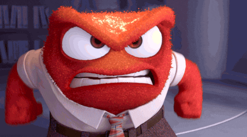

Wir alle kennen es. Man wacht auf und hat das Gefühl das ihn schon alles auf die Nerven geht. Jede Kleinigkeit löst bei uns im kopf eine kleine Atomschmelze aus. Der Bus kommt 2 min. zu spät, das stürmische Wetter geht einem richtig auf den Sack und bei jeder Person die mit dir redet geschweige denn nur anschaut, spielt sich in deinem Kopf eine Szene ab wie du ihn vor die Ubahn schubst.
Diese plötzliche Stimmungsschwankungen wie Wutausbruche, den wir meist selbst gar nicht so richtig nachvollziehen können. Woher kommt diese plötzliche Energie, diese Wut im Bauch oder die Anspannung im gesamten Körper, wenn wir sauer sind. Was wenn sich die Tage an denen wir schlecht gelaunt sind sich immer wiederholen und wir unbewusst mehr und mehr im inneren unglücklicher werden werden ?
Gefühle sind grob gesagt erst einmal der Gegenpol zu unserem Verstand. Alles, was der Verstand nicht logisch erklären kann, spielt sich auf der Gefühlsebene ab. Die Gesellschaft lehrt uns, Gefühle zu kontrollieren und dadurch immer ein Stück weit zu unterdrücken – wir verbergen Gefühle aber nicht nur vor anderen, sondern immer auch vor uns, um ein gewisses Bild von uns Selbst aufrechtzuhalten.
Sie geben uns die Möglichkeit mit der Umwelt und anderen Menschen persönliche Beziehungen aufzubauen. Mit ihrer Hilfe versetzen wir uns in andere hinein und versuchen deren Bedürfnisse zu verstehen. Gehen wir bewusst mit unseren Gefühlen um, dann erhalten wir wichtige Informationen über uns selbst, unsere Mitmenschen und unsere Beziehungen zu ihnen, die unserem Verstand möglicherweise ganz verborgen blieben.
Emotionen sind anders
Sie werden nicht nur gedacht, sondern auch gefühlt, was sie erschreckend real erscheinen lässt. Obwohl auch sie nur ein Produkt unseres Verstandes sind. Sie existieren nicht nur in unseren Köpfen, sondern auch in unseren Körpern. Aufregung ist nicht nur die Vorstellung, was passiert, wenn wir uns blamieren. Es ist auch ein erhöhter Herzschlag, veränderte Pupillen und schwitzende Hände.
Die Stärke der körperlichen Reaktion hängt von der Emotion, ihrer Intensität und individuellen Faktoren ab. Veranlagung, psychische Stabilität, Verfassung und Erfahrungen verstärken oder schwächen die Reaktion. Deshalb spüren manche Menschen vor einem Date lediglich ein leichtes Kribbeln im Bauch, während andere kurz davor sind ohnmächtig zu werden.
Emotionen = Stress

Emotionen verursachen Stress. Je intensiver, desto stärker. Wird der Druck zu hoch, schaltet sich unser Verstand ein und verarbeitet die Flut an Emotionen. Jeder von uns verfügt über natürliche Bewältigungsmechanismen, die uns dabei helfen, nicht durchzudrehen und halbwegs in Balance zu bleiben.
Eigentlich haben wir alles, was wir brauchen, um angemessen mit unseren Emotionen umzugehen. Doch das ist nicht so einfach wie man denkt.
Warum?
Viele Menschen geraten im Laufe ihres Lebens an einen Punkt, an dem sie verlernen, wie sie normal und gesund mit Emotionen umgehen können. Sie erleben Scheidungen, Trennungen, Traumata, seelische Gewalt, Tod eines Angehörigen oder vielleicht sogar alles zusammen. Ihr emotionaler Stress überwältigt sie. Dazu kommt ein stressiger Alltag voller neuer Probleme sei es das man 1 Woche vor der Prüfungsphase im totalen Stress verfällt, der Boss einem unglaublichen Druck vor dem Abgabetermin eines Projektes macht oder die eigen Kinder einem die ganze Energie rauben. Sie finden keine Zeit um sich zu kümmern und ihre eigene Erlebnisse zu verarbeiten. Dadurch lernen sie zu fürchten, was sie spüren und sich damit auseinanderzusetzen.
Aus dieser Angst entstehen typischerweise zwei bedenkliche Bewältigungsstrategien:
Emotionen unterdrücken
Emotionen freien Lauf lassen
Beide Optionen sind nur eine Lösung für den Moment, jedoch wirst du früher oder später aufwachen und zwei Dinge feststellen: Du bist ein Wrack und dein Leben ist ein Haufen Scheiße. Der emotionale Stress wird nicht abgebaut, sondern verstärkt und das lässt uns langsam ausbrennen.
Ein falscher Umgang mit Emotionen führt zu schlechterem Schlaf, physische Beschwerden und einem Gefühl von Abgestumpftheit. Weiterhin leiden unsere Beziehungen, wir werden anfälliger für Depressionen, haben Probleme unseren Platz in der Welt zu finden und laufen Gefahr, ignorante Zombies zu werden.
Was passiert, wenn wir Gefühle & Emotionen unterdrücken
Wir können Emotionen nicht auslöschen aber wir können sie ignorieren. Statt dein Zimmer aufzuräumen schieben wir den ganzen Müll unters Bett und stopfen unaufgeräumt Klamotten in den Schrank. Hauptsache es scheint alles sauber zu sein…
Wir stürzen uns mit Alkohol, Arbeit, Videospielen, stundenlangem scrollen auf der Suche nach dem perfekten Leben auf Instagram und mit einer Maske die einen komplett anderen Menschen repräsentiert in die Achterbahn der Ablenkung. Uns geht es gut. Das sagen wir allen und auch uns selber. Immer und immer wieder. Das kann sogar ein paar Jahre lang gut funktionieren.
Doch dann merkst du früher oder später das du deine Gefühle nicht loswirst. Denn Emotionen entstehen im Unterbewusstsein und diese können immer noch unsere Gedanken & Verhalten beeinflussen.
Sich von seinen Emotionen überwältigen lassen
Sich von Gefühlen überwältigen zu lassen, bedeutet, sein Handeln nach ihnen zu richten.
Emotionen beeinflussen dadurch jede Entscheidung und navigieren uns durch unser Leben. Weiterhin verändert unsere Einstellung gegenüber Emotionen die Umwelt, in der sie entstehen. Lassen wir sie ungefiltert zu, legitimieren wir jedes Gefühl, dass zukünftig auf uns niederknallt. Wir passen unser Handeln an das an, was wir fühlen und nicht das was wir denken. Ob sie dann noch angemessen sind, oder nicht, spielt keine Rolle mehr.
Je mehr wir Emotionen freien Lauf lassen, desto mehr Relevanz erhalten sie in unserem Leben, was zwangsläufig zu mehr Stress führen wird. Es fühlt sich zwar gut und richtig an, doch ohne Rücksicht auf andere Menschen entsteht zwangsläufig mehr Schaden als Gutes.
ein anderer Weg
Ich bin nicht das, was ich fühle, aber irgendwie auch schon: Abstand gewinnen
Also müssen wir das Gefühl benennen.
Du wirst wütend?
Sage dir : “Ich fühle mich wütend.”
Das hört sich bescheuert an, ist aber nützlich. Emotionen sind keine klaren Gedanken, sondern lediglich vage Empfindungen, die wir oft erst im Nachhinein verstehen. In dem Moment, wo sie entstehen, haben wir das Gefühl, dass sie ein Teil von uns sind. Wir fühlen uns nicht wütend, wir sind wütend.
Wenn wir das schaffen, können wir im nächsten Schritt nachvollziehen, woher die Emotion kommt.
Oft begreifen wir nicht, aus welchem Grund die Emotion entsteht. Alles was wir haben, ist ein Gefühl, dass sie wichtig und richtig ist. Wenn wir es aber schaffen, den wahren Auslöser zu erkennen, sehen wir oft, das er lächerlich oder leicht zu beseitigen ist.
Der dritte Schritt, ist, zu verstehen, wie eine Emotion dein Verhalten aktuell beeinflusst. Was tust du, wenn du wütend wirst? Wie verändern Emotionen dich und was löst es bei anderen Menschen aus?
Diese drei Schritte erlauben dir einen Gesamteindruck darüber, was Emotionen mit dir tun. Wenn dieses Bild vollständig ist, wird es dir leichter fallen, einen Schritt zurückzugehen und zu lernen, dass du nicht das bist, was du fühlst.
Glaubenssätze anpassen
Deine Glaubenssätze sind die Umwelt, in der Gefühle entstehen. Auch wenn du im Moment wenig an deinen Emotionen ändern kannst, an deinem Glauben kannst du immer arbeiten. Meist sind es deine Erwartungshaltungen an die Menschen um dich herum, die problematisch sind. Je mehr du über die Menschen in deiner Umgebung lernst, desto leichter wird es dir fallen, schwachsinnige Glaubenssätze in deinem Denkmuster zu finden und zu eliminieren.
Meditation kann dabei helfen und ist in diesem Zeitalter sogar unglaublich wichtig. Ich rede nicht davon das du dich im Schneidersitz mit geschlossenen Augen vor dich hin summst und dein Qi sammelst.
Wann hast du dich das letzte mal einfach nur auf dich konzentriert? Die ganzen Erlebnisse und Eindrücke in Ruhe verarbeitet.
Heutzutage wird dein Gehirn so voller Informationen überflutet das es die wichtigen Dinge einfach überfliegt. Whatsapp Nachrichten, Snaps, Insta Sorys, Youtube Videos, Netflix usw. , die unzähligen Apps sind nur dafür da dich davon abzulenken dich mit deinen Gedanken zu beschäftigen.
Wir schaffen es nicht mal während der Busfahrt einfach nur rauszuschauen und die Umgebung zu beobachten oder anderen im Gespräch in die Augen zu schauen. Ständig schauen wir aufs Handy um uns nicht mit den Gefühlen genau in diesem Moment zu beschäftigen.
Schalte alles ab sei es nur für 10 Minuten. Schau aus dem Fenster, mache ein Spaziergang, oder leg dich einfach nur hin und geh einfach mal durch was du so den ganzen Tag erlebt hast. Welche Emotionen du heute gefühlt hast, mit welchen Menschen du geredet hast etc. Denke einfach nur an dich und sonst nichts aus deiner Umwelt.
Gefühle verarbeiten und akzeptieren bedeutet nicht, dass sie sich in Luft auflösen werden. Sie werden bleiben und sie werden gut, beschissen oder irgendwas dazwischen sein. Das Ziel ist nicht, nie wieder zu fühlen. Das Ziel ist, den emotionalen Stress nicht weiter zu verstärken und einen gesunden Umgang zu finden. Also wieso verarbeiten wir unsere Gefühle dann nicht? Haben wir Agnst davor sich diese zu stellen? Haben wir Angst schwach, vor anderen, für einen Moment zu wirken?
"If you are searching for that one person that will change your life, take a look in the mirror"
Und denk immer daran: Du hast nichts zu verlieren!